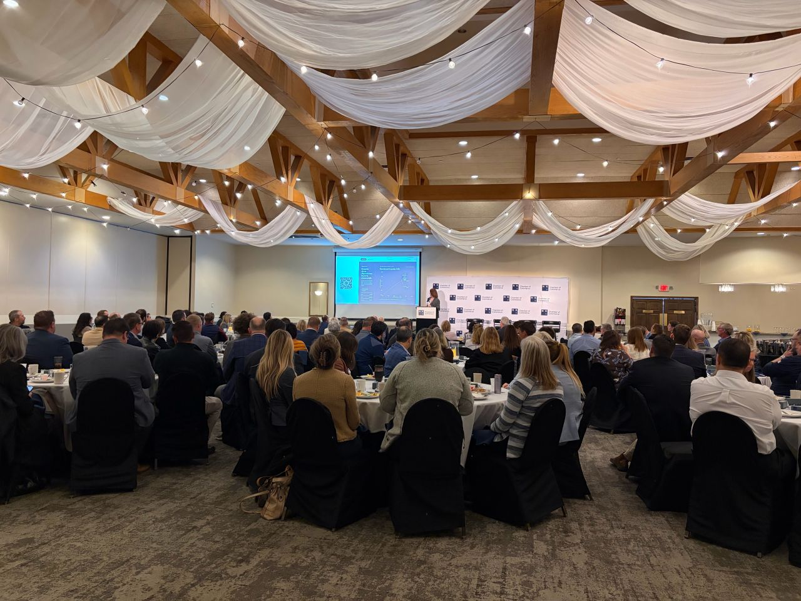
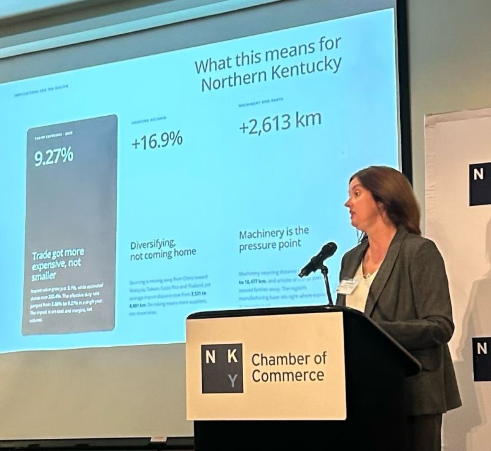
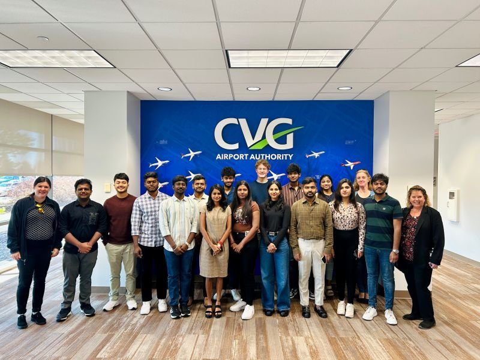

Exposure analysis
We map which of your products, suppliers and countries of origin are exposed, and how much it could cost you.
Exposure Readout · Exposure Map
Supply chain geopolitics · Advisory & research
The Supply Chain Geopolitics Observatory maps, on demand, how tariffs, conflicts and shifting alliances reach your supply chain, and shows you where to act before the impact shows up in your costs.
Featured in
What we do
We map which of your products, suppliers and countries of origin are exposed, and how much it could cost you.
Exposure Readout · Exposure Map
We run scenario sessions and briefings so your executives decide what to do before a disruption hits.
Scenario Room · Signal Briefing
We train your team to run this analysis on their own, and speak at conferences and leadership meetings.
Trace · Measure · Decide · Speaking
Why the Observatory
20+ years
In industry. Former Director of Operations for Latin America at multinational companies.
15+ years
Teaching and researching supply chains, at FGV and, since 2019, at Northern Kentucky University.
Real international view
Lived abroad and worked across countries. Global supply chains, lived firsthand.
Research
Ongoing work with partner universities, practitioners and undergraduate researchers.
All researchInteractive view of partners, distances and duty costs.
What happens to a third country caught between two rivals: new production role or new risk?
The cloud, GPS and energy systems that many firms rely on at once, and that can fail together.
News & events
Upcoming
Jan 22 2027
Business leaders, researchers and students together for a day on the forces reshaping regional competitiveness.
Ask about attendingLatest on LinkedIn
Dr. Cristiane Biazzin
Brazil's factories run on U.S. standards while its farms follow Chinese demand. A president can change the tone with both powers, but supply chains move much more slowly.
Read the article
Followed by a panel with leaders from Flottweg USA, Bonfiglioli, Mazak and U.S. Playing Card.


Start here
Companies with a sourcing question, researchers interested in collaborating and students who want to get involved: we would like to hear from you.
Start a conversation